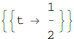
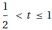
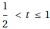

東京大学 2020年 理科 第3問
問題
-1≤t≤1を満たす実数tに対して、
とする。座標平面上の点P(x(t),y(t))を考える。
(1) -1<t≤1におけるtの関数は単調に減少することを示せ。
(2) 原点とPの距離をf(t)とする。-1≤t≤1におけるtの関数f(t)の増減を調べ、最大値を求めよ。
(3) tが-1≤t≤1を動くときのPの軌跡をCとし、Cとx軸で囲まれた領域をDとする。原点を中心としてDを時計回りに90°回転させるとき、Dが通過する領域の面積を求めよ。
解答
(1)
 をtで微分したものの、-1<t≤1における最大値は
をtで微分したものの、-1<t≤1における最大値は
だから、-1<t≤1において は常に負。したがって
は常に負。したがって は単調減少する。
は単調減少する。
(2)
f'(t)の概形およびf'(t)=0の解は以下。


従ってf(t)は において単調増加、において最大、において単調減少。
において単調増加、において最大、において単調減少。
f(t)は のとき最大値
のとき最大値
(3)
求める領域を図示すると下図。
よって求める面積は、領域Dの面積と、(2)より半径で中心角90度の扇形の面積の和となる。
補足・感想
計算処理の部分だけMathematicaにやらせるタイプ。